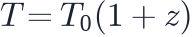
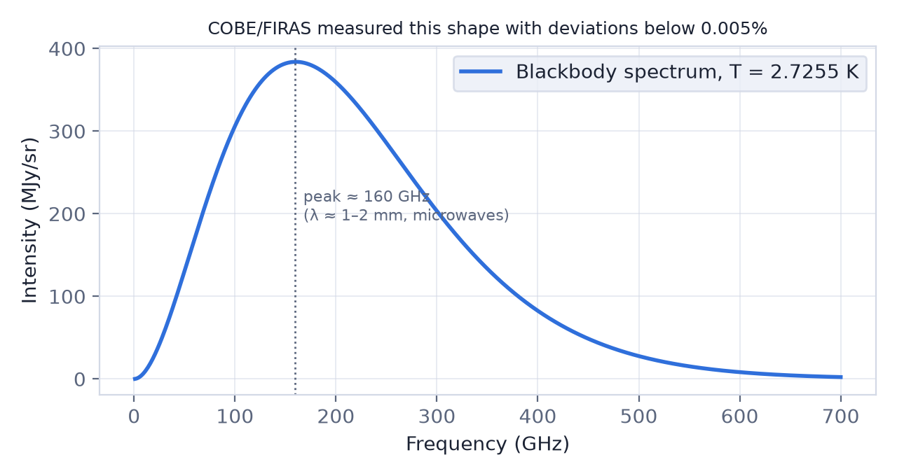

In this lesson you will learn
|
A foggy universe
Before about 380 000 years, the universe was a hot plasma of free electrons, protons, helium nuclei and photons. Photons constantly bounced off free electrons (Thomson scattering), so light could not travel far in a straight line. The universe was opaque, like the inside of a thick fog or the interior of the Sun.
Recombination
As the universe cooled, electrons combined with nuclei to form neutral atoms. Cosmologists call this recombination (even though atoms had never been "combined" before).
Hydrogen is held together with an energy of 13.6 eV. You might expect atoms to
form once  drops below 13.6 eV, around 150 000 K. In fact
hydrogen became neutral only at about 3 000 K (
eV).
drops below 13.6 eV, around 150 000 K. In fact
hydrogen became neutral only at about 3 000 K (
eV).
The photon majority again With more than a billion photons per atom, even a tiny fraction of photons in the high-energy tail of the blackbody spectrum is enough to ionise every atom that forms. Only when the temperature is far below 13.6 eV does that tail become too small. The same effect delayed deuterium formation in lesson L4.3. |
Using

, a temperature of 3 000 K corresponds toThe balance between atoms being ionised and electrons being captured is described by the Saha equation, which puts half the hydrogen neutral at about 3 700 K. The real universe lags behind even that. An electron captured straight into the ground state emits a photon that ionises the next atom, so each atom has to get there through the level, slowly — and a few electrons in ten thousand never find a proton at all.
Try it: Recombination Explorer Compare the Saha curve with the real one, then open "Why so cold?" to count the photons that can still ionise an atom. |
Decoupling and last scattering
With the free electrons locked in atoms, photons no longer scattered. Matter and
radiation decoupled, and the universe became transparent. Each CMB
photon we detect today last scattered off an electron at about the same time,
around  — give or take about a hundred: the
visibility function that says where they scattered has a
width, so the "surface" is really a shell.
— give or take about a hundred: the
visibility function that says where they scattered has a
width, so the "surface" is really a shell.
Seen from Earth, these last scattering events form a sphere around us at a comoving distance of about 14 Gpc (45 billion light-years): the last scattering surface. We cannot see any light from beyond it; it is like the glowing surface of a cloud.
The CMB does not come from a place The last scattering surface is not a special place in the universe. Every observer sees their own sphere. Observers in a distant galaxy see light from a different region, released at the same time. |
The cosmic microwave background
Since decoupling, the photons have travelled freely while the universe expanded by a factor of about 1 100. Their temperature dropped from 3 000 K to 2.7 K, and their typical wavelength grew from about 1 micrometre (near infrared) to about 1 millimetre (microwaves). This is the cosmic microwave background.

An accidental discovery In 1964–1965 Arno Penzias and Robert Wilson at Bell Labs could not get rid of a faint hiss in their radio antenna, coming equally from all directions. About 50 kilometres away, Robert Dicke's group in Princeton was preparing to search for exactly this relic radiation. Penzias and Wilson received the 1978 Nobel Prize. |
Measuring the CMB
- A perfect blackbody. The COBE satellite's FIRAS instrument (1990) showed the
CMB spectrum matches a blackbody at
 K better than any source
known. Only a hot, dense, uniform early universe produces this naturally.
K better than any source
known. Only a hot, dense, uniform early universe produces this naturally. - The dipole. One side of the sky is about 3.4 mK warmer than the other, because the Solar System moves at about 370 km/s relative to the CMB.
- Tiny ripples. After removing the dipole, temperature variations of about 1 part in 100 000 remain (COBE, 1992). These are the seeds of all later structure, mapped in detail by WMAP (2001–2010) and Planck (2009–2013).
Why the ripples matter The pattern of hot and cold spots encodes the geometry of space, the amounts of ordinary matter, dark matter and dark energy, and the nature of the initial fluctuations. Analysing it gave the precise ΛCDM parameters of lesson L3.4. |
Try it: Cosmology Calculator Set z = 1090 and read the temperature, the age of the universe and the scale factor at last scattering. |
Try it: CMB Sky Viewer The CMB Sky Viewer holds the real WMAP map of that surface. Smooth it by 5° and watch the ripples disappear: almost all of the signal lives at about one degree. |
Remember this
|